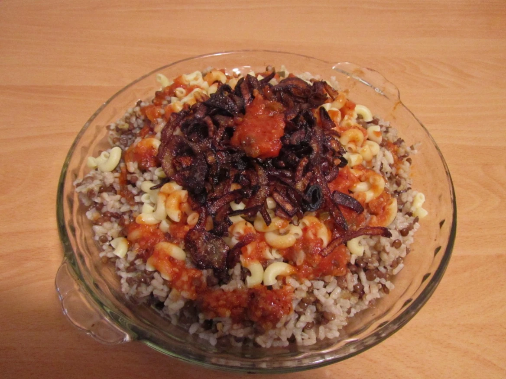

Egypt's Beloved Bites Is A Modern Mystery In An Ancient Cuisine
February 22, 20177:00 AM ET
Written by: Moustafa Nady

Koshary, also spelled Kushari or Koshari, is a popular Egyptian dish that has its roots in the country's diverse culinary heritage. It's a vegetarian dish that brings together a mix of ingredients, creating a flavorful and hearty meal. Koshary is often considered a national dish of Egypt and is widely enjoyed by people from all walks of life.
Some variations of Koshary might also include additional ingredients like caramelized onions, garlic, and various spices to enhance the overall flavor profile. Koshary is typically served as a street food dish, available at restaurants and food stalls throughout Egypt. It's known for being affordable, filling, and satisfying, making it a popular choice for locals and visitors alike. The combination of different textures and flavors in Koshary creates a unique and delicious culinary experience.
What are the ingredients?
Rice: The base of Koshary is typically rice, which is often cooked with vermicelli to add texture.
Lentils: Another essential ingredient is lentils, which provide protein and a hearty element to the dish.
Macaroni: Pasta, usually macaroni, is a fundamental component, adding a different texture to the dish.
Chickpeas: Cooked chickpeas are often included, adding both protein and a nutty flavor.
Tomato Sauce: A rich tomato sauce, often flavored with garlic and various spices, serves as the main sauce for Koshary.
Fried Onions: Crispy fried onions are used as a topping, providing a crunchy element and a slightly sweet flavor.
Garlic Vinegar Sauce: A garlic-infused vinegar sauce is commonly served on the side, allowing diners to adjust the level of acidity to their taste.
Rice: The base of Koshary is typically rice, which is often cooked with vermicelli to add texture.
Lentils: Another essential ingredient is lentils, which provide protein and a hearty element to the dish.
Macaroni: Pasta, usually macaroni, is a fundamental component, adding a different texture to the dish.
Chickpeas: Cooked chickpeas are often included, adding both protein and a nutty flavor.
Tomato Sauce: A rich tomato sauce, often flavored with garlic and various spices, serves as the main sauce for Koshary.
Fried Onions: Crispy fried onions are used as a topping, providing a crunchy element and a slightly sweet flavor.
Garlic Vinegar Sauce: A garlic-infused vinegar sauce is commonly served on the side, allowing diners to adjust the level of acidity to their taste.